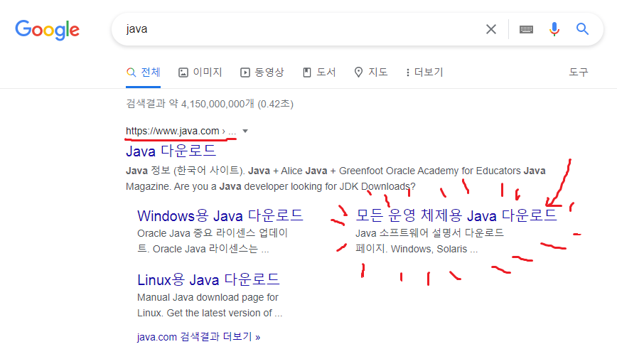
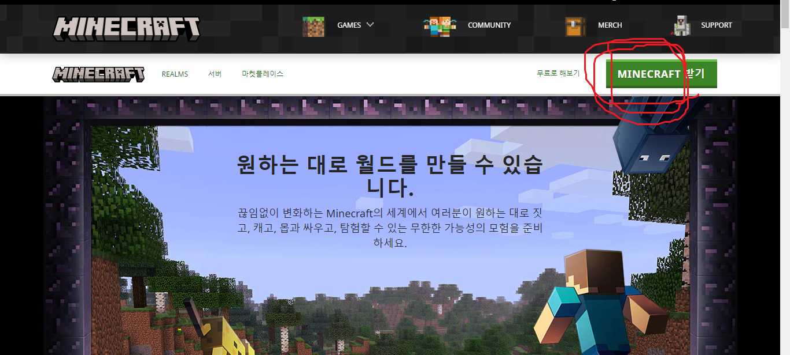
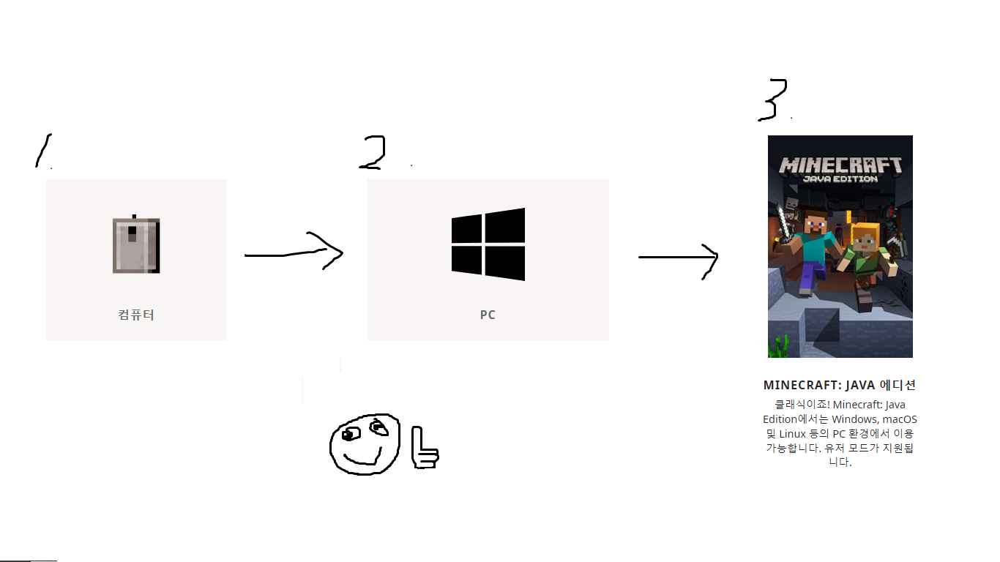
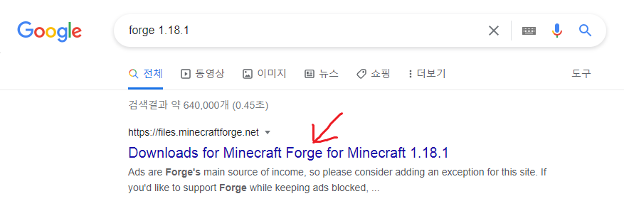

파일 다운로드 방법
1. 자바 다운받기

자바 홈페이지 접속 후 본인 운영체제에 맞는 파일 다운로드(32비트, 64비트 확인방법은 알아서 검색하세요)
2. 마인크래프트 다운받기

마크 홈페이지에 접속

로그인 후 MINECRAFT 받기 클릭

자바 에디션 다운로드 받고 실행
3. Forge 다운받기
Forge는 쉽게 말해서 마크에 모드를 집어넣기 위해 필요한 파일입니다.

구글에 검색해서 여기로 들어가기

위에 있는 커다란거 받지 말고 반드시 39.0.75 버전을 받아주세요!

다운받은 파일을 실행시키고 "Install client" 선택 후 설치를 진행
4. 모드 파일 적용하기
.minecraft/mods 폴더 안에 넣으면 됩
서버 주소
gobongsan.p-e.kr
를 입력해서 접속하면 됩니다